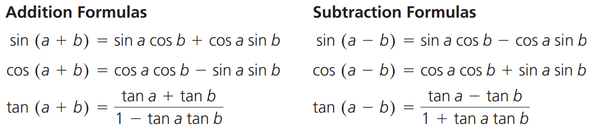
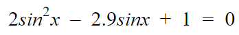

Trigonometric Functions
Radians
Like degrees, radians can be used to represent an angle. Unlike degrees, radians do not require a unit of measurement!
To convert between radians and degrees, one can use the formula θ = a/r, where theta represents the angle, a represents the arc that subtends
the angle, and r represents the radius of the circle. An image of these terms are represented below.
360o is equivalent to 2π. This also makes sense when you think about it since the circumference of a circle is equivalent to
2πr and if the radius is 1, then the circumference of a circle is equivalent to 2π. 1 radian is equivalent to approximately 57.3o.
Note that when working with radians, you should make sure that your calculator is in RADIANS mode.
Radians on the Unit Circle
Take a look at this unit circle, updated now with supercalifragilisticexpialidocious radians! :D
Transformation of Trigonometric Functions
This is literally the same as previous trigonometric problems, except instead of working with degrees, you work with radians. For instance, instead of 360o|k| giving you the period, it's now 2π/|k|!
In case you forgot how transformations work, take a look at the summary chart below.
They apply to the equations f(x) = asin(k(x - d)) + c and f(x) = acos(k(x - d)) + c.
Exploring Tan
Tan, or tangent, is equivalent to opposite over adjacent. In the case of the unit circle, this is equivalent to the sin of an angle over the cos of an angle (sin/cos). In a unit circle, tan tends to be that weird line hanging out around the circumference of a circle, as shown below. Notice how it has the same slope as the red line (except it's opposite in sign)!
The graph for tan is a lot weirder than sin or cos. It looks like this:
Think of spaghetti when you think of tan. There are a few key characteristics of f(x) = tan(x):
Transformations on tan are virtually the same as it is on sin or cos, at least in terms of how it is drawn. Its transformation formula looks like f(x) = atan(k(x - d)) + c. The only difference is with the a value, or the vertical stretch/compression. Now that the graph no longer has an amplitude, you only really need to make the graph look thinner or wider (see below).
Exploring Graphs of Reciprocal Trigonometric Functions
Before we continue, here's a really helpful image Khan Academy created to depict the basic trig ratios
and their reciprocals below on a single unit circle.
Now, let's dive into summaries of the properties of each graph cosecant, secant and cotangent!
First up, cosecant or f(x) = csc(x):
Next is secant, or f(x) = sec(x):
Finally, we have cotangent, or f(x) = cot(x):
Trigonometric Identities & Equations
Equivalent Trigonometric Functions
Welcome to the final review section for trigonometry! When working with trigonometric functions, you may have noticed that the graphs are continuous; they have one pattern that simply repeats over and over again, just at different x-coordinates. Thus, it comes to no surprise that there can be multiple different equations that may represent one graph. For instance, the graph of f(x) = sin(x) can also be represented by the cosine function shifted π/2 to the right (resulting in f(x) = cos(x - (π/2))). This even works for equations such as f(x) = cos(-x) and f(x) = cos(x).
Compound Angle Formulas
Compound angles refer to angles that are created by adding or subtracting two or more angles together.
Here is a list of the different compound angle formulas:
Double Angle Formulas
These are simply more identities to add to your already long list of identities:
Proving Trig Identities
It is finally time for the moment we've all been waiting for, the moment in which you can FINALLY use all those identities you've been collecting. Below is a summary image of all the identities covered thus far.
When a question asks you to prove an identity, it's merely asking to show that both sides of the identity are equivalent to each other. In this case, it's often best to try to work with only one side of the identity and manipulate it to achieve a value that is equivalent to the other side. An example of proving an identity is shown below:
Solving Linear Trigonometric Equations
Let's say you have a ball that bounces up and down in a sinusoidal way. It continuously bounces off the ground to reach a height of 2 meters.
It completes a full bounce (from ground to the max height back to the ground) in 5 seconds.
Now, given a time frame of 40 seconds and that the ball starts from the ground, how would you find out at what
times in this time interval was the ball at a height of 1 meter? This scenario is graphed below.
The above scenario is an example of when you would need to solve a linear trigonometric equation.
For this particular problem, we are interested in the x-coordinate of every intersection point
between the linear graph and the sinusoidal one. An important thing to notice is that the intersection points are all a half period apart.
In this given scenario, each period is 5 seconds, so each intersection point is 2.5 seconds apart!
This information is useful since this means we only need to calculate when the first intersection point occurs!
Then the rest just involves adding 2.5 seconds to that first point, until you reach a value greater than or equal to 40.
To solve for the first intersection point, you'd need to equate the equation of the linear function to the equation of the
sinusoidal function.
The equation of the sinusoidal function is f(x) = -cos(2pi/5 * x) + 1.
The equation of the linear function is g(x) = 1.
Therefore, to equate the two functions I'd write 1 = -cos(2pi/5 * x) + 1, and solve for x!
I'd end up with x = 1.25 as my first point, meaning I first hit a height of 1 meter at 1.25 seconds.
This is initially when the ball first starts bouncing upwards. I next hit the 1 meter mark as the ball falls back down,
at 1.25 + 2.5 = 3.75 seconds! To find the rest of the times, I'd keep at 2.5 seconds
to the previous times. Since we have a restriction of 40 seconds however,
I'd need to only consider the times that fall between 0 and 40 seconds for this question.
Solving Quadratic Trigonometric Equations
In some cases, you may be forced to consider the scenario when there are 2 possible answers. For instance, consider this equation:

You may notice that this is a quadratic equation, thus meaning, MULTIPLE ANSWERS! When working with trigonometric quadratic equations, THERE ARE NOW 4 ANSWERS!
That's because it is possible for certain angles to have equivalent trig ratios (ie. sin(30o) = sin(150o)). Some things
are better shown than explained, so consider my solution for this question below.
Rates of Change + Bonus: Induction
Average Rate of Change (AROC)
The average rate of change is calculated by taking 2 points on a function and calculating the slope between those two points. In mathematical terms:
Estimating Instantaneous Rates of Change (IROC)
Estimating the instantaneous rate of change on a graph is very similar in nature to calculating the AROC between two points. Except instead of trying to find the rate of change between any two points on a graph, you're trying to find the rate of change at a single point on a graph.
To find the slope at a single point, you need tangent lines, which are lines that touch a curve on a graph at only a single point. The slope of that tangent line will refer to the IROC at that point! An example of this idea is shown below.
IROC focuses on finding the slope of that tangent line. However, simply trying to eyeball another point on the tangent to find its slope can become very inaccurate. So, instead of straining our eyes, why don't we simply choose another point that is SO close to the original point, they may as well be the same point?
Consider (1, f(1)) and (1.01, f(1.01)). Aren't they really, really close together? The x coordinates only differ by 0.01! If we can find the slope between these 2 really close lines, we will actually be able to make the best possible guess on the IROC at that point!
Notably, you don't need to use 0.01. You could also use 0.1 or 0.001 too; the smaller you go, the more accurate the IROC (but only go smaller if your calculator can handle it). Now, with estimating IROC, we have the equation:
Rates of Change & Graphs
The idea of finding the IROC or AROC of something is especially applicable in the field of physics! However, since I don't want to try and teach a whole kinematics unit right now, I'll simply go over a few key ideas that AROC or IROC can indicate when imagining the graph the AROC or IROC is derived from.
Rates of Change in Trigonometric Functions
Good news! You don't have to learn anything new, since calculating the AROC or IROC on a trigonometric function uses the same formulas and ideas from the previous sections in this review. The only thing to keep in mind is that the IROC at each maximum and minimum point will always be 0.
Mathematical Induction
Induction is a lot of things, but in math, it is a way to prove that any general statement P(n) will hold for every natural number (P(0), P(1), P(2), P(3), etc.).
When trying to prove a statement via induction, you'll be working with 3 cases.
The first case, you will test if your statement works with the base case of 1.
Next, you will test if your statement works with the general term n (though this normally just involves rewriting the original statement, since it will usually be written with n anyways).
Then you will test if your statement works with the number after any general term n, or with n + 1! This idea of proving via induction is better shown with an example:
Note: Example taken from in-class example.